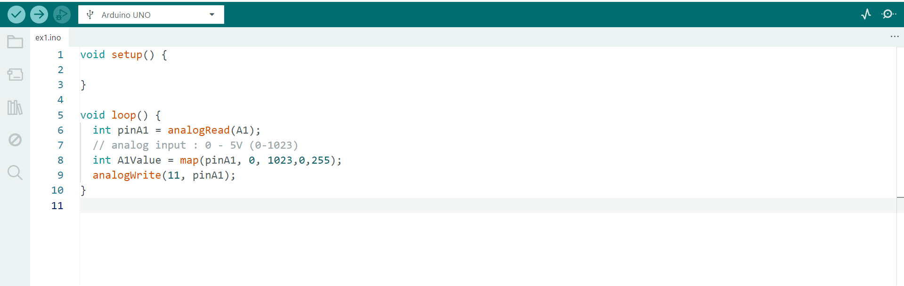

Overview
Generating light with an LED using analogWrite() is relatively straightforward.
However, because an Arduino continuously executes the loop() function,
it can also respond to changing inputs in real time.
For example, a push button can be used to activate the LED only when desired,
while a potentiometer combined with analogRead() allows the system
to continuously monitor user input.
By using the map() function, the analog input range can be scaled
to match the LED brightness range, enabling smooth real-time control of the LED's intensity.
Code Implementation
The code below demonstrates real-time LED brightness control using
analogRead(), map(), and analogWrite().

The potentiometer's analog input is read by the Arduino, scaled to an appropriate
PWM range using map(), and then passed to analogWrite()
to adjust the LED brightness in real time.
Video Demonstration
A demonstration of the potentiometer in operation can be viewed through the link below.
Watch the Potentiometer Demonstration Video